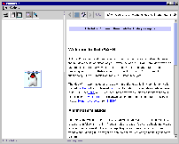
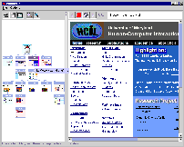
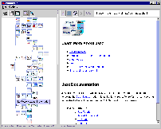

{kind=link}
{kind=link}
{kind=link}

AutoBAHN is a graphical bookmark/history companion to a traditional web browser that builds a navigation history as you browse the web. AutoBAHN provides advanced bookmarking functionality by allowing the user to edit, save, and reopen these browsing sessions. AutoBAHN is an acronym which derives its name from its functionality -- the Automatic Bookmark And History Navigator.
The idea of a history navigator is based on an earlier graphical history aid application named PadPrints. PadPrints used Pad++ as its underlying zoomable interface toolkit. AutoBAHN uses Jazz. For its browser/HTML rendering technology, AutoBAHN uses a Swing web browser from ICESoft. AutoBAHN takes advantage of Jazz's capabilities to support panning and zooming, and also uses the Jazz tree layout manager to take care of managing the history visualization.
AutoBAHN was developed by Jin Tong, a graduate student in the Computer Science department at the University of Maryland, while visiting the Java Software team at Sun Microsystems.
AutoBAHN starts up.

Browsing the web with AutoBAHN while the browsing history is built as a history tree with
thumbnails of pages visited.

The user can zoom in a node on the history tree to preview/review what that page is about.
This picture shows zooming in a node from a history tree loaded from a previously saved
session.

Inactive branches can be collapsed to save screen space. This screen shows the same tree from
the previous screen with some branches collapsed into one node.